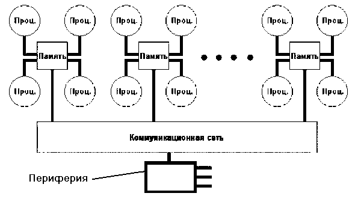

Гибридная архитектура (NUMA)
Гибридная архитектура NUMA ( nonuniform memory access). Главная особенность такой
архитектуры- неоднородный доступ к памяти.
Гибридная архитектура воплощает в себе удобства систем с общей памятью и относительную
дешевизну систем с раздельной памятью. Суть этой архитектуры - в особой организации памяти,
а именно: память является физически распределенной по различным частям системы, но
логически разделяемой, так что пользователь видит единое адресное пространство.
Система состоит из однородных базовых модулей (плат), состоящих из небольшого числа
процессоров и блока памяти. Модули объединены с помощью высокоскоростного коммутатора.
Поддерживается единое адресное пространство, аппаратно поддерживается доступ к удаленной
памяти, т.е. к памяти других модулей. При этом доступ к локальной памяти осуществляется в
несколько раз быстрее, чем к удаленной. По существу архитектура NUMA является
MPP (массивно-параллельная архитектура)
архитектурой, где в качестве отдельных вычислительных элементов берутся SMP
(cимметричная многопроцессорная архитектура) узлы.
Структурная схема компьютера с гибридной сетью: четыре процессора связываются между собой при помощи кроссбара в
рамках одного SMP узла. Узлы связаны сетью типа "бабочка" (Butterfly):

Впервые идею гибридной архитектуры предложил Стив Воллох и воплотил в системах, серии Exemplar. Вариант Воллоха - система,
состоящая из 8-ми SMP узлов. Фирма HP купила идею и реализовала на суперкомпьютерах серии SPP. Идею подхватил Сеймур
Крей (Seymour R.Cray) и добавил новый элемент - когерентный кэш, создав, так называемую архитектуру cc-NUMA
(Cache Coherent Non-Uniform Memory Access), которая расшифровывается как "неоднородный доступ к памяти с обеспечением когерентности кэшей".
Понятие когерентности кэшей описывает тот факт, что все центральные процессоры получают одинаковые значения одних и тех
же переменных в любой момент времени. Это достигается синхронизацией информации, хранящейся в кэш-памяти процессоров.
Для обеспечения подобной когерентности кэшей существуют несколько возможностей:
- Использовать механизм отслеживания
шинных запросов (snoopy bus protocol), в котором кэши отслеживают переменные передаваемые к любому из центральных
процессоров и, при необходимости, модифицируют собственные копии таких переменных.
- Выделять специальную часть памяти, отвечающую за отслеживание достоверности всех используемых копий переменных.
В списке Тор500 за 2000г доля суперкомпьютеров с архитектурой NUMA и cc-NUMA составили 22% от общего количества
высокопроизводительных систем. Наиболее известными системами архитектуры cc-NUMA являются: HP 9000 V-class в
SCA-конфигурациях, SGI Origin2000, Sun HPC 10000, IBM/Sequent NUMA-Q 2000, SNI RM600.
Масштабируемость NUMA-систем ограничивается объемом адресного пространства, возможностями аппаратуры поддержки
когерентности кэшей и возможностями операционной системы по управлению большим числом процессоров. На настоящий момент,
максимальное число процессоров в cc-NUMA-системах составляет 512 (серия
Origin2000).
Обычно вся система работает под управлением единой ОС, как в SMP. Возможны также варианты динамического
"подразделения" системы, когда отдельные "разделы" системы работают под управлением разных ОС.
При работе NUMA-системами, также как с SMP, используют так называемую парадигму программирования с общей памятью
(shared memory paradigm).


 [Назад]
[Оглавление]
[Вперед]
[Назад]
[Оглавление]
[Вперед]
Последнее обновление 11.12.2001 WebMaster